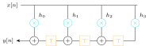

![\(y[n]=\sum_{k=0}^{N-1}h_k\,x[n-k]\)](m/aa3ae41d9715509d0feed17e61cadd6fa344aebe.svg) : in direct form a delay line feeds
: in direct form a delay line feeds  adders); retiming the delays across the adders gives the transposed form, critical path one multiplier and one adder; a serial version uses one MAC for
adders); retiming the delays across the adders gives the transposed form, critical path one multiplier and one adder; a serial version uses one MAC for Construction
- Direct form: registers (tapped delay line), products , adder chain. Critical path .
- Direct pipelined: registers in the adder chain (and matching ones on the delay line) cut the path to , adding latency.
- Transposed form: the input is broadcast to all multipliers and the registers sit between the adders: , . Critical path with no extra latency. It is obtained from the direct form by retiming: reverse the order of additions, move the delays across the adders, remove the addition with 0.
- Serial: one multiply–accumulate unit, a coefficient ROM and a circular buffer:
 cycles per output, minimal area.
cycles per output, minimal area. - Adder tree / CSA: the products summed in carry-save form.
Picture

Transposed form: the input is broadcast, the registers sit in the accumulation chain, each adder sees one product and one register.
Evaluation
Compare architectures on area (multipliers, adders, registers), throughput (outputs per second = or ), latency and power (switching in the adder chain, broadcast load on ). Constant coefficients allow shift-and-add multipliers (canonical signed digits).
Intuition
The same equation fits a long fast pipeline or one small unit reused times; retiming moves between equivalent shapes for free.
Pitfall
In the transposed form the input drives multipliers: the fan-out load on grows with and must be buffered.